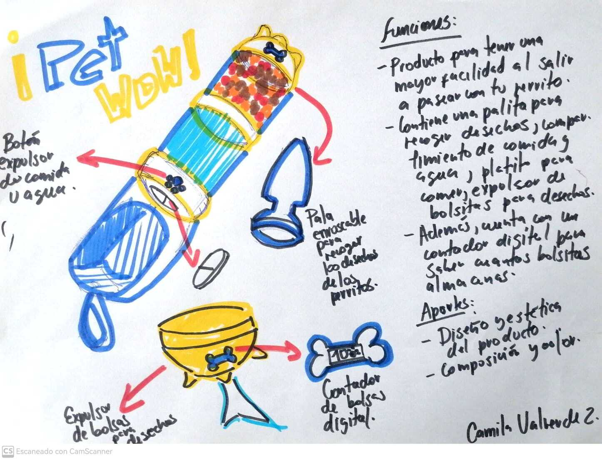
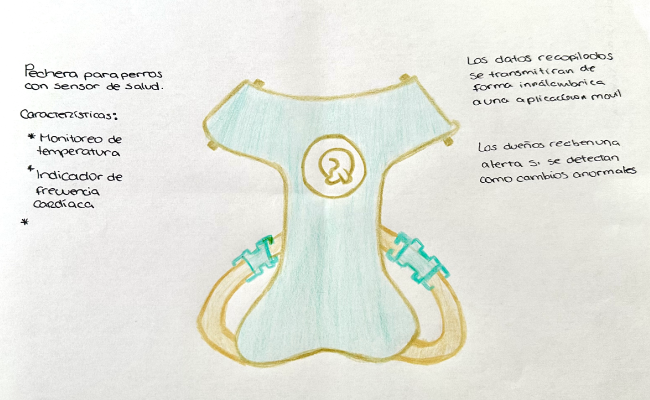

Valeria

Tras la problemática sobre los jóvenes que no se informan de los problemas mundiales, quería hacer que estos se informaran de una forma dinámica y atractiva. Se basa en crear 17 tarjetitas, de tamaño carné, en la que en cada una se encontrará una imagen correspondiente a las 17 problemáticas de la ODS. Esta tarjeta tendrá 2 opciones:
1. La imagen en la tira de la tarjeta será leida por el lente para verlo en realidad virtual
2. Y el código qr en la retira de la tarjeta que será escaneada para llevarte a la página donde podrás ver toda la información sobre la imagen vista en el lente.
Psdt: Esta imagen vista en el lente, no es la imagen representada en la tarjeta, sino una imagen que pase en el actual espacio y tiempo.
Camila
Como todos sabemos, el cuidado e higiene de nuestras mascotas son lo más importante para darles una mayor calidad de vida, es por ello que, decidí proponer un producto para el uso diario de nuestras mascotitas, el cual deberá ser práctico y fácil de trasladar.
A este diseño lo llame "PET-WOW", el cual te permitirá trasladar en pequeñas cantidades la comida y agua de nuestras mascotas. Asimismo, incluirá dos funciones más que son el poder tener un porta bolsitas con un contador digital que nos permitirá saber la cantidad de bolsas disponibles; así como, una palita que sirva para recoger los desechos de nuestras mascotas sin tener contacto alguno.
Antonella

Mi idea son crear unas pulseras con sensores magnéticos y voz tipo “Siri” que actúan al instante en el cual se presenta algún síntoma de ansiedad, y a la vez miden las palpitaciones y presión arterial, controlan el sueño y ayudan con el ejercicio de la respiración>
Tengo el diseño, prototipo, 3D y me falta gente que sepa de arduino, programación y marketing
Paola
Pechera para perros con sensor de salud
Esta innovadora propuesta combina moda canina y tecnología para mejorar la salud de los perros. Incluye ropa con sensores de salud, conectividad a una app móvil para monitoreo en tiempo real, alertas de salud, historiales de salud, personalización de la ropa, comodidad y durabilidad, además de recursos educativos.
Esta idea brinda beneficios tanto a los perros como a sus dueños, al proporcionar una herramienta de monitoreo efectiva y una forma elegante de mantenerse conectados con sus mascotas.